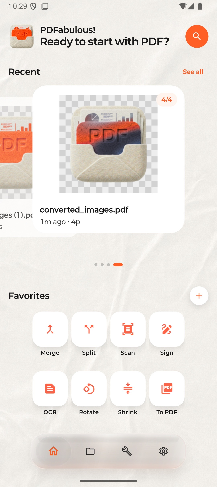
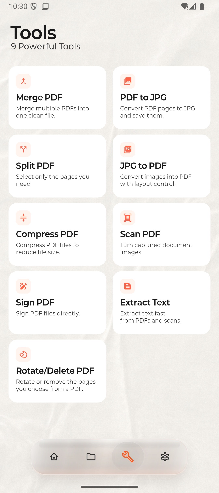
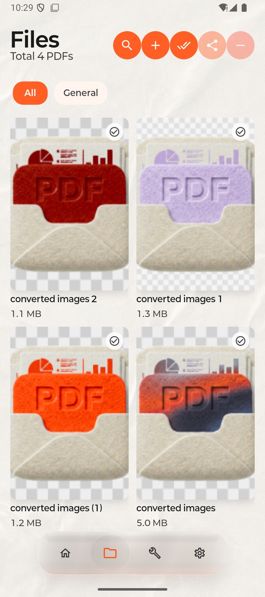

⊕
Merge / Split PDF
여러 PDF를 하나로 합치거나, 필요한 페이지만 잘라 별도 파일로 만들 수 있습니다.
PDFab은 읽기만 되는 뷰어가 아닙니다. 병합, 분할, PDF↔JPG 변환, 스캔, 압축, 서명, 텍스트 추출까지, 실제로 자주 쓰는 PDF 작업을 빠르게 끝내기 위한 앱입니다. 복잡한 데스크톱식 UI 대신 휴대폰에서 바로 이해되는 구조로 정리했습니다.


앱에 실제로 들어간 화면을 기준으로, 사용자가 가장 많이 쓰는 기능만 전면에 배치했습니다.
여러 PDF를 하나로 합치거나, 필요한 페이지만 잘라 별도 파일로 만들 수 있습니다.
PDF 페이지를 이미지로 저장하거나, 이미지를 PDF로 다시 묶어 전달할 수 있습니다.
파일 용량을 줄여 공유와 업로드 부담을 낮추는 데 집중한 압축 기능입니다.
촬영한 문서 이미지를 PDF 작업 흐름으로 바로 연결할 수 있습니다.
문서를 출력하지 않고 모바일에서 직접 서명해 빠르게 처리할 수 있습니다.
PDF와 스캔 문서에서 텍스트를 추출해 검색, 복사, 재사용 흐름으로 이어집니다.
홈, 도구, 파일 관리 화면을 그대로 반영해, 다운로드 전에 앱 구조를 바로 파악할 수 있게 구성했습니다.
최근 문서와 즐겨찾는 도구를 먼저 보여줘, 자주 하는 작업으로 바로 들어갈 수 있습니다.
병합, 변환, 압축, 스캔, 서명, 텍스트 추출 등 핵심 도구를 카드형으로 정리했습니다.

파일 목록과 선택 액션을 단순하게 묶어, 여러 PDF를 정리하고 처리하는 흐름에 맞췄습니다.
학습보다 실행이 먼저여야 한다는 기준으로, 작업 흐름은 최대한 짧게 설계했습니다.
최근 문서에서 바로 열거나, 파일 탭에서 원하는 PDF를 선택합니다.
병합, 분할, 변환, OCR, 압축, 서명 중 필요한 기능만 골라 즉시 처리합니다.
결과 파일을 저장하고, 다른 앱이나 상대방에게 바로 전달하면 됩니다.
PDFab은 기능 수를 과장하지 않고, 실제 사용 빈도가 높은 작업을 모바일에 맞게 정리한 앱입니다. 문서를 열고 끝내는 것이 아니라, 필요한 결과물까지 빠르게 만들어내는 데 초점을 맞춥니다.